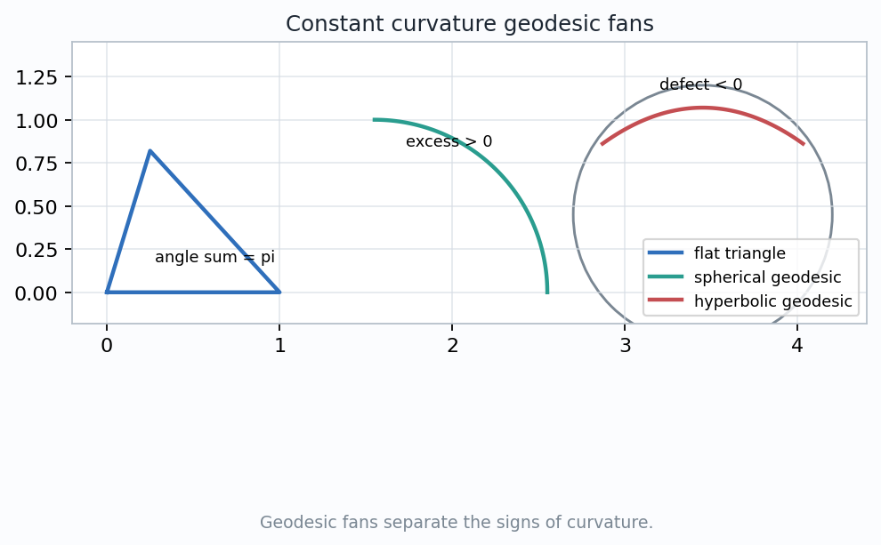
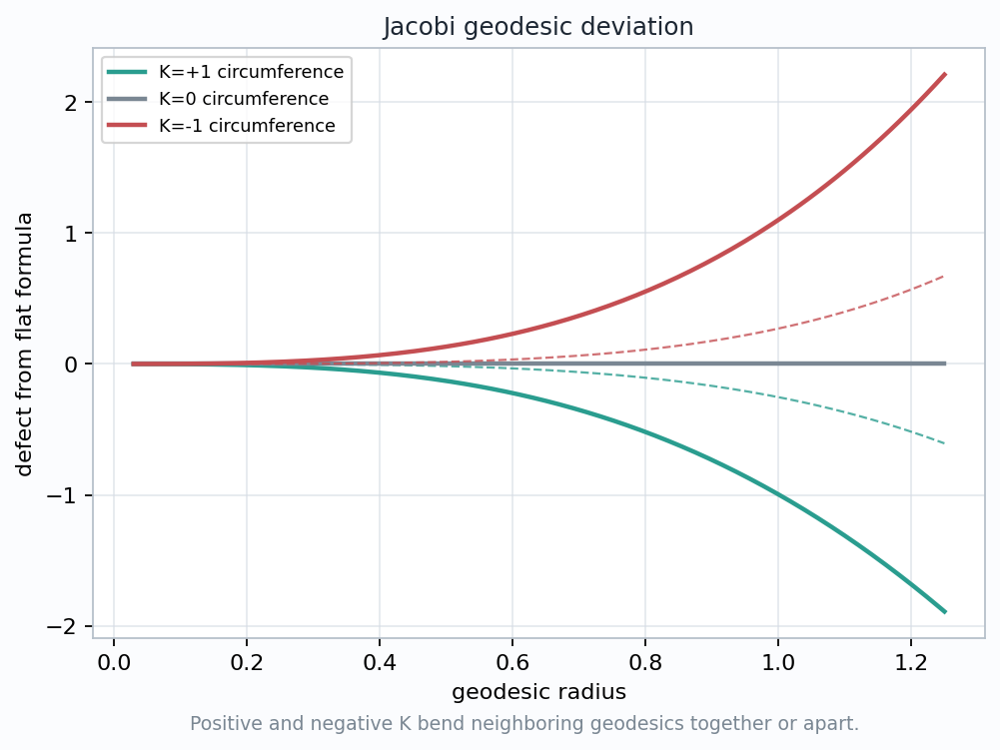
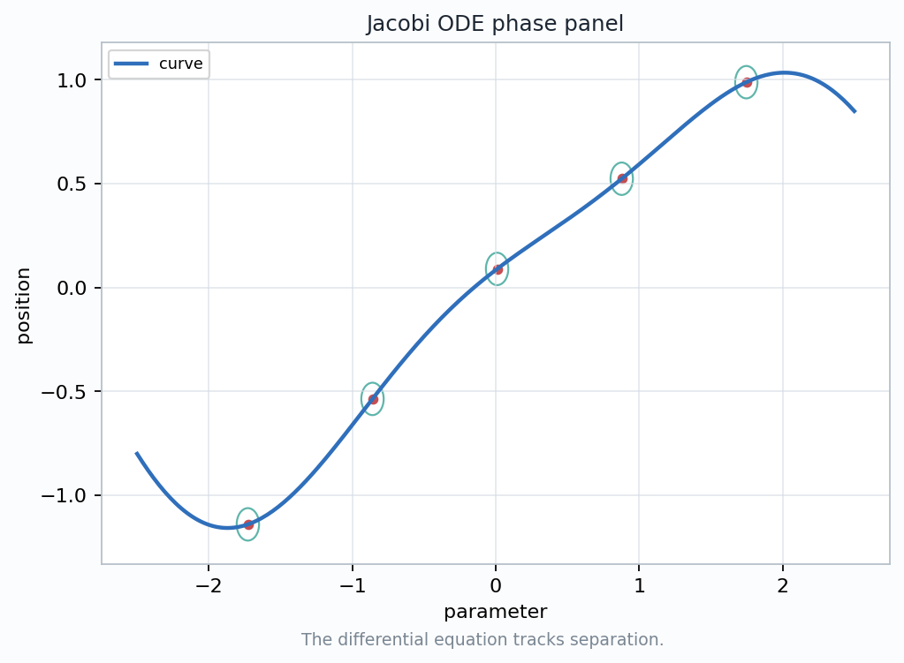

A curvature tensor becomes visible when initially close geodesics accelerate toward or away from one another.
$$\frac{D^2J}{dt^2}+R(J,T)T=0$$
The same geodesic equation holds for every path in the family, but curvature makes their separation field accelerate.
Watch the sign of \(K\): positive curvature focuses, zero curvature coasts, negative curvature spreads.
$$J(t)=\left.\frac{\partial \gamma(s,t)}{\partial s}\right|_{s=0}$$
The vector lives in \(T_{\gamma_0(t)}M\), not in a fixed coordinate plane.
Each \(s\)-curve is a geodesic. The \(s\)-derivative records how the neighboring geodesic changes when the label changes.
A drawn distance between curves is chart dependent. The Jacobi field is the invariant tangent-vector bookkeeping for that separation.
\(J(0)\) is initial offset and \(DJ/dt(0)\) is initial relative velocity. These two pieces determine the field.
$$\frac{D^2J}{dt^2}=-R(J,T)T$$
Relative acceleration after every comparison has been made inside the moving tangent planes.
The curvature operator takes the separation direction and the geodesic velocity, then returns the tidal push on \(J\).
If \(R=0\), then \(D^2J/dt^2=0\): separation changes linearly.
$$j''+Kj=0$$
Here \(J=jN\), with \(N\) a parallel unit normal along the base geodesic.
Linear separation; flat geodesic fans keep Euclidean bookkeeping.
Oscillatory separation; initially parallel paths tend to refocus.
Hyperbolic growth; nearby geodesics diverge faster than flat space predicts.
Ask which sign behaves like a restoring force. Students should answer from the fan picture before reading the equation.


\(K=0\): the Euclidean comparison says that the leading defect should vanish.
Separation and circumference fall below the flat expectation. The surface has less room than Euclidean space.
Separation and circumference rise above the flat expectation. The surface has more room than Euclidean space.
Positive \(K\): \(j''=-Kj\)
Negative \(K\): \(j''=|K|j\)
$$J(0),\quad \frac{DJ}{dt}(0)\quad \Longrightarrow\quad J(t)$$
They mark the evolving separation values along the parameter.
They remind us that the local data includes direction and uncertainty in the tangent comparison.
Jacobi deviation is not a static picture. It is an ODE: position and velocity data are propagated by curvature.

$$ds^2=dr^2+G(r,\theta)^2\,d\theta^2$$
$$G_{rr}+KG=0$$
\(G(0,\theta)=0\), \(G_r(0,\theta)=1\). Curvature enters in the next terms.
Small-circle circumference is obtained by integrating the angular coefficient \(G\). Deviation of \(G\) from \(r\) records curvature.
$$(\nabla_s\nabla_t-\nabla_t\nabla_s)V=R(S,T)V$$
Transporting velocities around a tiny geodesic rectangle produces a small failure to return.
The Jacobi force uses \(R(J,T)T\). Holonomy uses \(R(S,T)V\). Both ask how transport depends on the order of directions.
Previous holonomy chapters measured curvature by loops. This chapter measures it by the acceleration between neighboring geodesics.
$$C(r)=2\pi r\left(1-\frac{K(p)}{6}r^2+O(r^3)\right)$$
$$A(r)=\pi r^2\left(1-\frac{K(p)}{12}r^2+O(r^3)\right)$$
Positive \(K\) makes small circles smaller than Euclidean circles. Negative \(K\) makes them larger.
The circle is swept out by radial geodesics. Its circumference is the accumulated separation between neighboring rays.
one-parameter family of geodesics
Jacobi field \(J\) records infinitesimal separation
\(D^2J/dt^2=-R(J,T)T\)
fans, ODE samples, and small-circle defects
Four concept-named visuals are recorded in the chapter 28 artifact subtree.
The saved JSON checks assert nonblank visuals and chapter-specific invariant samples.
The inspection targets match the lecture route: signs of \(K\), ODE propagation, and defects.
curvature = relative acceleration
between free geodesics
The formula becomes geometric when the separation vector is drawn, transported, and measured.